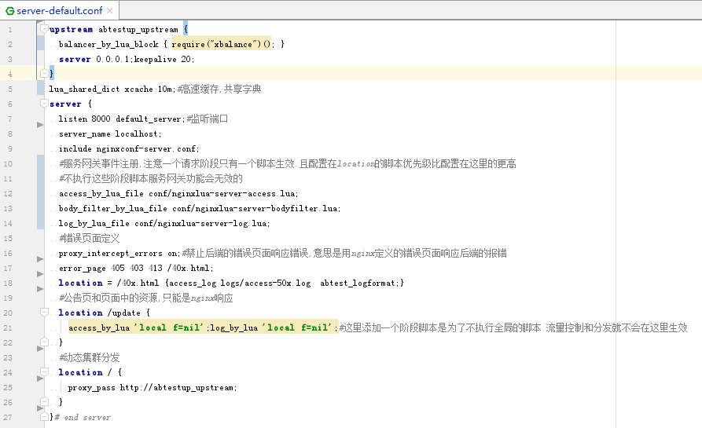

分流引擎设计
分流引擎是整个系统的核心，所有功能实现都依托于这个分流引擎，所以设计上是重中之重，这个系统是否好用的关键因素在这里。
我在设计的时候其实看过几个别人做出来的系统，参考了优缺的。
设计目标：
1. 完全独立
只有完全独立，无第三方依赖的程序才具备高健壮性。除非代码有 bug，否则绝不会因为其他因素而带来故障。
事实上正是这点帮我避规了非常多的风险，我想你们应该知道这个分流引擎 ( Nginx ) 是真正面对一线用户的东西，如果健壮性有问题会多么可怕。 完全独立这个目标也包括可以不依赖控制台独立存在。
当然为了这个目标也需要做到很多额外的设计要求，比如共享内存持久化，需要开发一套分流引擎的接口，和一套控制台的接口，完成数据交互对接。
2. 完全分布式，性能可线性扩容
在设计上，所有功能第一考虑要素是需要支持分布式。
比如限流，我们可以使用 Redis 进行全局精确限流，但是 违背了设计目标 1，目标 2 的可线性扩容也不容易做到。
所以，我在设计上采用 Nginx 共享内存进行限流，用控制台对限流值按权重赋值给每一个 Nginx 。
这样的非精确限流设计，事实上才是合理的，因为前端组件不应该做这种业务级别判断，绝对一致的精确限流应该是后端做的。比如库存扣减。
我们 Nginx 这里只保证放到后端的请求是后端可以承受的，但不保证这一秒放过的请求和下一秒完全一样。
3. 配置动态化
最初春哥的 Lua 模块是不支持 balancer_by_lua 阶段的，所以一开始我是采用 access_by_lua 阶段判断分发的目标集群，保存在一个 Nginx 变量里，然后当集群发生改变时，更新集群配置 reload 的。
我们知道 Nginx 的 reload 是有短暂的并发低谷的，所以在发现支持 balancer_by_lua 阶段后，我第一时间修改逻辑，将所有集群配置和分流规则放共享内存。
结合我前面提到的制作一个共享内存持久化的库就可以保证配置动态，但是又独立存在，以后开发的其他功能也可以复用这个设计模式。
最终一个 server 段的配置就这么简单了，其他配置都是固定不变无需调整。
但是在功能开发上需要 尽量 pcall 执行 代码不要在非关键错误上使 Nginx 报 500。

其实如果你只想简单实现动态分发，只要学习下 balancer_by_lua 这个阶段代码的示例怎么写就可以了。还是非常简单的。
在分发判断逻辑上还是需要好好思考的，要足够灵活又要配置简单，还要执行效率高。
我这里采用的配置结构为：
{
{
其他的一些配置项，比如分发目标集群编号，超时时间设置
['or] = {
{条件1}，
{条件2}
}
['and] = {
{条件1}，
{条件2}
}
}，
{
第二个分流规则
}
}
相同的判断条件是有执行缓存的，其实说到这里，可以得出一个程序界的 终极法则（两多一少）：要想快就要 多用缓存、多传址，少 COPY。